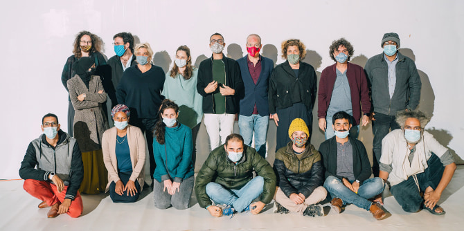

בית הומא – בית האמנים בנגב, שבו נערך הטקס, מתח פנים לאחרונה כחלק מהפיכתו למרחב ובית לפעילות של אמנים בנגב, בהובלתו של עמית הקבוצה יוגב וענונו, ולבש חג לכבוד האירוע. את הבאים קידמה תערוכה מרתקת של עמיתי התוכנית ובה כמה דימויים העוסקים במושג ריטריט, בהשראת תהליך הלמידה בתוכנית.
הטקס נפתח במופע מחול קצר מתוך המופע "חגורה שחורה" של להקת אדמה בניהולו של ניר בן גל, אשר פועלת בשדרות. את הטקס הנחה עמית הקבוצה, המשורר יצחק כהן, ונשאו בו דברים מוקלטים מנכ"ל קרן מנדל-ישראל מר משה ויגדור, וראש עיריית באר שבע מר רוביק דנילוביץ'.
את דבר הבוגרים נשאה האדריכלית
אביבה פרידמן, שציינה כי תרבות נגב הוא מושג שעלול להישמע באוזני רבים כאוקסימורון מורכב, אולם בחירתה של קרן מנדל להכנס לעובי הקורה באומץ ולהתייחס לנושא התרבות בדרום הביאה לגיבושה של קבוצת אנשים בעלי עמדה וביקורת, והולידה גם סיטואציות שבחנו את גבולות המרחב של המקום, ושל המושג, תוך הכרה בצורך הבסיסי של פיתוח תרבות בנגב ורצון להתמודד עם כל המשתמע מהמפגש הזה.
בהמשך הציגה
אימאן אבו עליון, בוגרת התוכנית, את הרכיב המעשי שלה, שעסק במשמעות המקום והאוהל ביצירת מצע לשימור התרבות הבדואית ולהכרה בה, ככלי ליצירת זהות. את הרכיב הציגה באמצעות האתר "חולמים תרבות בנגב: הרכיב המעשי" שגובש לתוכנית, ואותו הציגה חברת הסגל
הדס קידר.
לקראת חלוקת התעודות לבוגרים נשאו דברים פרופ' דנה אריאלי וד"ר יצחק (קיקי) אהרונוביץ, מנהלי התוכנית. דנה ציינה את ייחודה של השנה המורכבת שליוותה את תהליך הלמידה ואת מצבן של התרבות והאמנות בימי הגבלות הקורונה, ואמרה כי התמדתם של חברי הקבוצה בתהליך ההכשרה היא מופת ופתח לפעולתם העתידית. קיקי ציין את ההנכחה של התרבות הקיימת בנגב ויצירתה, כמעשה חלוצי של הקבוצה, אל מול מוקדי הכוח של התרבות בישראל. הוא הדגיש שבוגרי התוכנית הם חולייה חשובה, לצד בוגרי המחזור הקודם והמחזורים הבאים של תוכנית מנדל למנהיגות תרבות בנגב, לקידום ולפיתוח של התרבות הקיימת, בראש ובראשונה עם ולמען התושבים.
הטקס נחתם בחלוקת התעודות ובחלוקת החוברת שהופקה ומאגדת את הרכיבים המעשיים של העמיתים, ובתקווה ובציפייה למפגש ולפתיחה של המרחב הציבורי, שיאפשרו לאנרגיה, לניסיון ולהכשרה של העמיתים לבוא לידי ביטוי בתרומה לשגשוג ולפיתוח של התרבות בנגב.

{kind=link}
{kind=link}